Porcelaine des Demoiselles
Atelier de peinture sur porcelaine à Port-des-Barques
Une dizaine d’amies se retrouvent pour peindre à la main assiettes, plateaux, tasses et vases. Elles apprennent ensemble, en se montrant leurs essais. On peut commencer sans savoir dessiner.

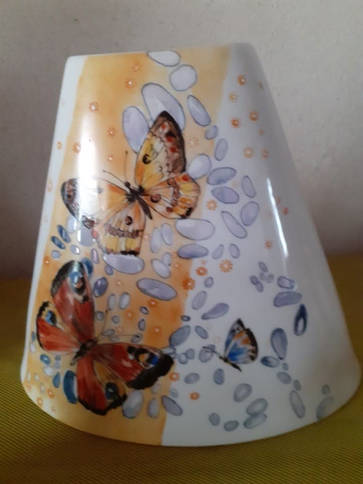

L’atelier
La Porcelaine des Demoiselles est une association de Port-des-Barques, notre petite cité balnéaire de Charente-Maritime. Nous sommes une dizaine de « créatrices en herbe », réunies par le goût de la peinture sur porcelaine.
On part d’une pièce blanche, et tout se fait au pinceau : fleurs, oiseaux, personnages, paysages… Chacune choisit ses motifs et avance à son rythme. On se montre ses essais, on se passe les astuces, et on apprend les unes des autres.
Chaque pièce est peinte à la main, du premier trait au dernier. Aucune n’est tout à fait pareille à une autre.
Ce que nous peignons
- Assiettes et plats
- Plateaux
- Tasses et soucoupes
- Coupelles et petites boîtes
- Vases
Venir peindre avec nous
Le groupe accueille volontiers de nouvelles membres, débutantes comprises : pas besoin de savoir dessiner pour commencer. Le plus simple est de nous écrire, ou de venir nous voir à une exposition-vente.

Nos pièces
Quelques pièces peintes par les membres, photographiées lors de nos expositions. Faites glisser la rangée pour les voir toutes, puis touchez ou cliquez sur une photo pour la voir en grand.


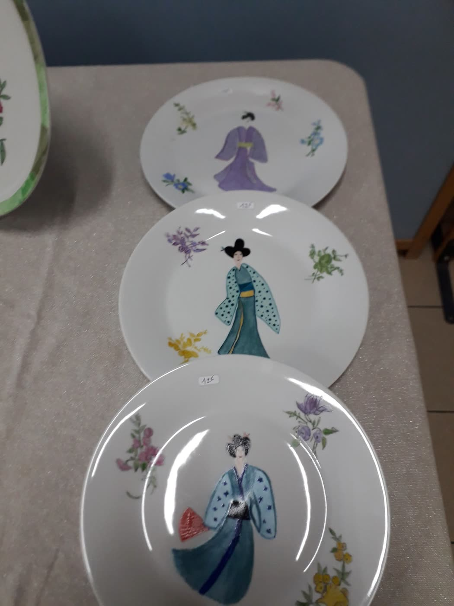

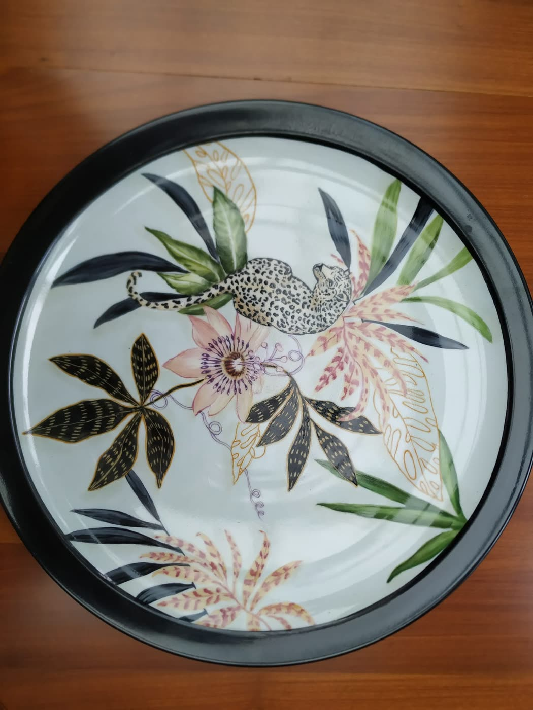

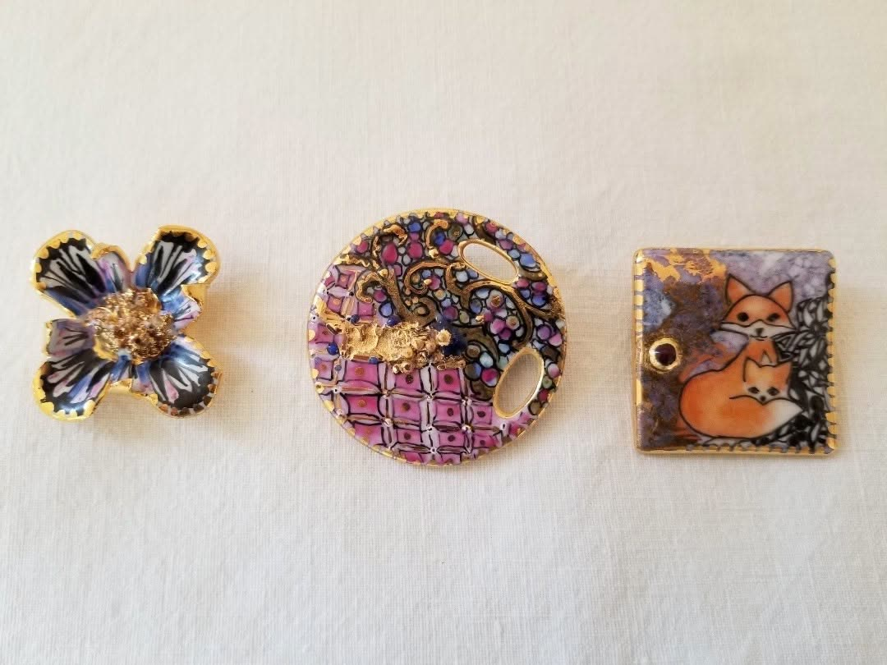

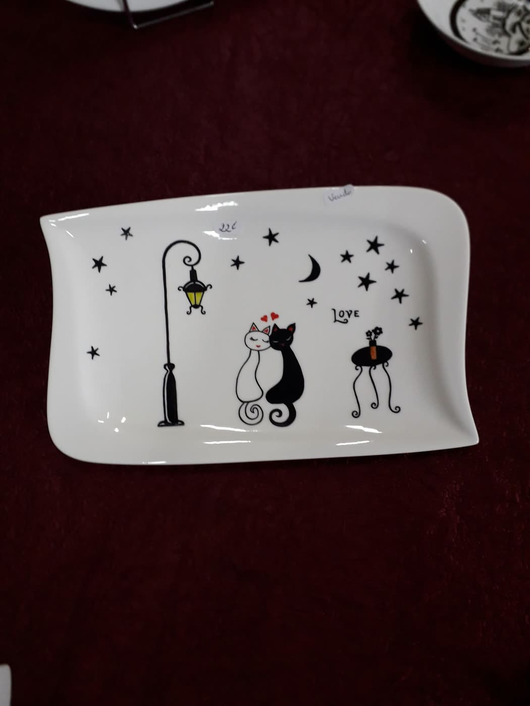

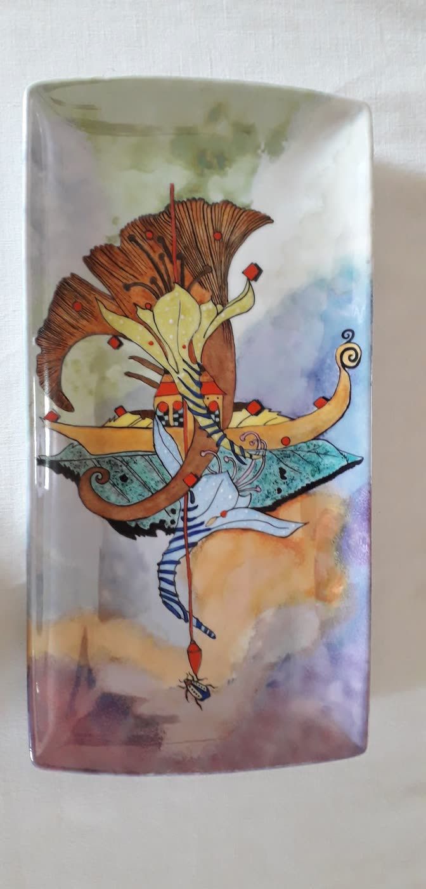


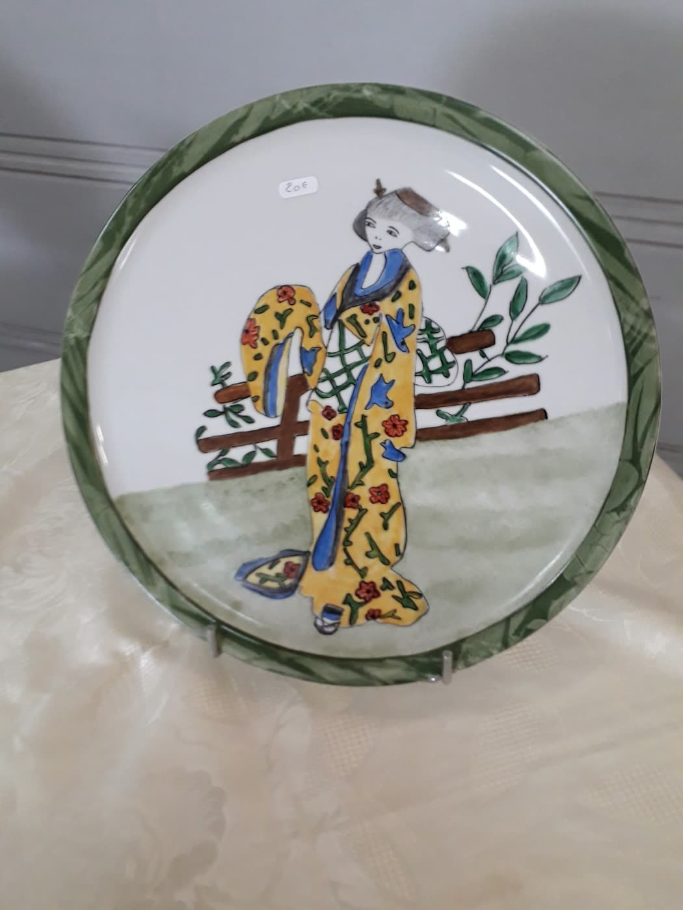


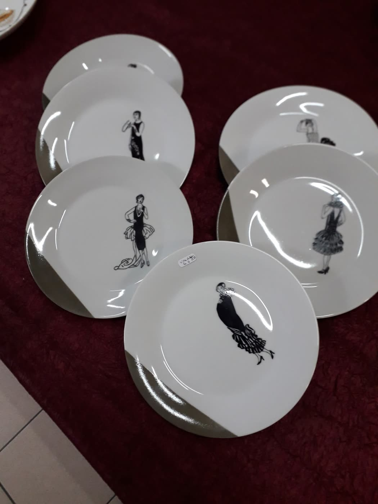

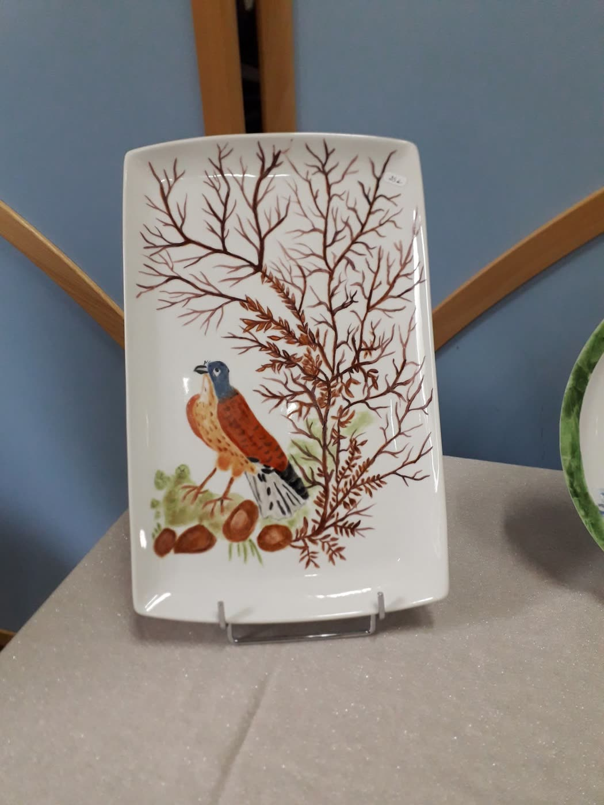

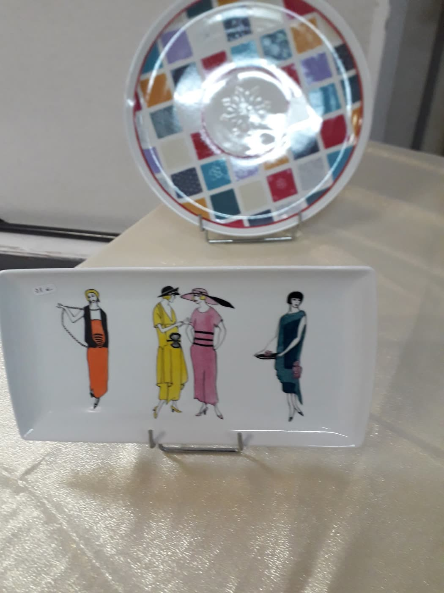

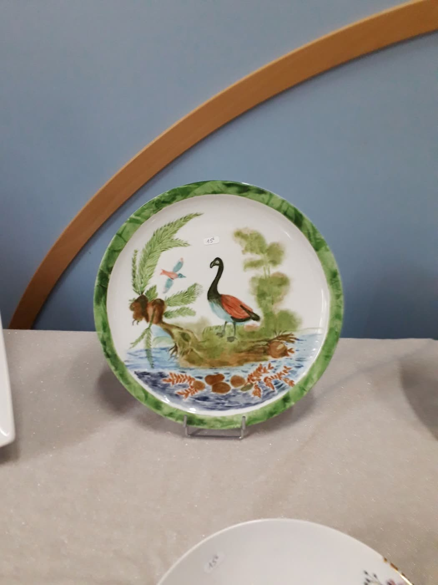
Rendez-vous
Au printemps et à l’automne, nous exposons nos pièces à la salle des fêtes de Port-des-Barques. On peut les voir de près, les acheter, et parler peinture avec nous.
Prochaine exposition Date à venir : elle sera annoncée sur notre groupe Facebook.
Les expositions passées
| Date | Événement | Lieu |
|---|---|---|
| 21 et 22 nov. 2026 | Exposition-vente | Salle des fêtes, Port-des-Barques |
| 1er et 2 nov. 2025 | Exposition-vente | Salle des fêtes, Port-des-Barques |
| 3 et 4 mai 2025 | Exposition-vente | Salle des fêtes, Port-des-Barques |
| 29 nov. 2020 | Marché de Noël | Salle polyvalente, Port-des-Barques |
Horaires habituels des expositions : le samedi de 10 h à 17 h, le dimanche de 10 h à 15 h.
Contact
Nous écrire
- Par e-mail
- Adresse à compléter
- Par téléphone
- Numéro à compléter
- Sur Facebook
- Groupe « Porcelaine des Demoiselles »
L’atelier en pratique
- Lieu des séances
- À compléter
- Jours et horaires
- À compléter
- Cotisation
- À compléter
- Expositions
- Salle des fêtes de Port-des-Barques (Charente-Maritime)